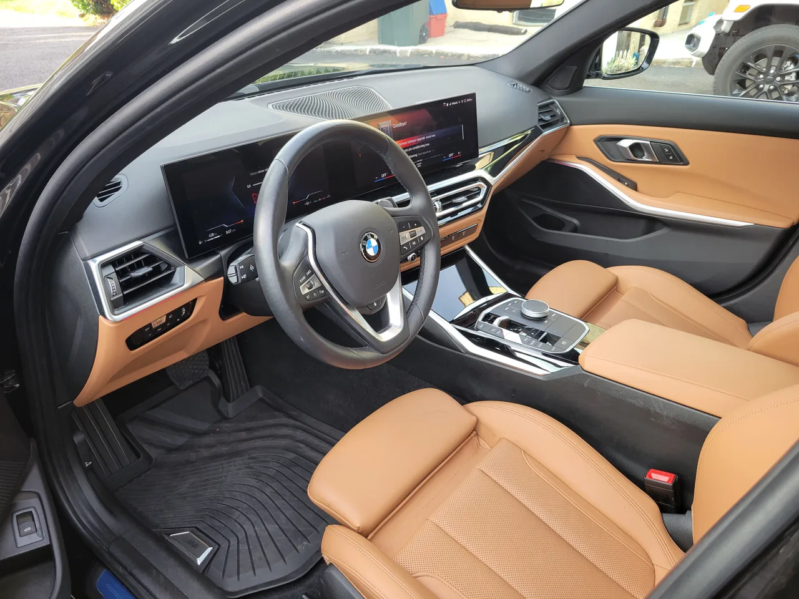

▲ BMW 비전 뉴클라쎄 콘셉트카 — 새로운 전기차 i3(NA0)와 가솔린 G50이 공유할 디자인 방향을 미리 보여준다 (양산형과 세부 디자인은 다를 수 있음) ⓒ Calreyn88, Wikimedia Commons (CC BY-SA 4.0)
BMW 3시리즈가 역사상 처음으로 내연기관 모델과 전기차 모델을 완전히 분리해서 내놓습니다. 내연기관형은 코드네임 'G50', 전기차형은 'NA0'로 개발됐는데, 이 전기차의 정식 이름이 놀랍게도 'i3'입니다. 2013년부터 2022년까지 팔리다 단종된 BMW의 초창기 소형 전기 해치백과 이름이 똑같습니다. 다만 이번 i3는 3시리즈 세단 체급의 완전히 다른 차입니다.
1. 왜 지금 갈라서나 — 투트랙 전략의 배경
BMW는 이미 5시리즈와 7시리즈에서 내연기관과 전기차를 별도 모델로 운영해온 바 있습니다. 3시리즈에 이 전략을 더욱 발전시켜 적용하는 이유에 대해 BMW는 "3시리즈는 브랜드의 심장부이자 철학의 상징이기에, 내연기관과 전기차 모두에서 동일한 감성을 유지해야 한다"고 설명했습니다. 플랫폼은 완전히 다르지만 디자인 아이덴티티는 공유하도록 설계했다는 뜻입니다.
2. 'i3'라는 이름, 왜 다시 꺼냈을까
가장 화제가 된 부분은 이름입니다. BMW의 첫 양산 전기차였던 i3(2013~2022)는 탄소섬유 차체와 독특한 해치백 스타일로 마니아층을 형성했지만, 결국 단종됐습니다. 그런데 올리버 집세 BMW 그룹 CEO가 컨퍼런스콜에서 신형 3시리즈 기반 전기 세단(코드네임 NA0)에 다시 'i3'라는 이름을 붙이겠다고 공식 확인했습니다. 2023년 IAA 모빌리티쇼에서 공개된 '비전 뉴클라쎄' 콘셉트카의 양산형이 바로 이 차입니다. 새 i3는 2026년 3월 18일 정식으로 베일을 벗었습니다. 옛 i3를 기억하는 소비자라면 헷갈리기 쉽지만, 세그먼트도 플랫폼도 완전히 다른 별개의 차라는 점을 기억해둘 필요가 있습니다.
3. 전기차 i3(NA0) — 뉴클라쎄 플랫폼의 첫 세단
새 i3는 BMW가 야심 차게 준비해온 전기차 전용 플랫폼 '뉴클라쎄(Neue Klasse)'를 탑재한 두 번째 양산 모델입니다(첫 번째는 iX3). 최대 항속거리는 약 400마일(약 644km) 수준이며, 최대 400kW급 초급속 충전을 지원해 10분 충전으로 300km 이상을 보충할 수 있는 것으로 알려졌습니다. 디자인은 발광 키드니 그릴과 얇고 샤프한 헤드램프, 플러시 도어핸들, 대시보드를 가로지르는 파노라믹 iDrive 디스플레이가 특징입니다.
4. 가솔린 G50 — CLAR 플랫폼 유지, M350은 410마력대

▲ 현행 3시리즈(G20)의 실내 — 신형 G50은 이 기존 CLAR 플랫폼을 유지하되 파노라믹 iDrive 등 새 디자인 언어를 입는다
반면 가솔린 모델인 G50은 기존 CLAR 플랫폼을 그대로 유지합니다. 트림은 318, 320, 330, 330e(플러그인 하이브리드), 그리고 M 퍼포먼스 모델인 M350 xD가 예정돼 있습니다. 특히 기존 M340i를 대체할 M350은 개선된 B58 직렬 6기통 엔진에 마일드 하이브리드 시스템을 결합해 410~417마력을 내는 것으로 추정되며, 이는 기존 M340i보다 약 30마력 강화된 수치입니다. M350은 배지에서 'i'를 뗀 것이 특징이며, 쿼드 배기팁과 20인치 휠이 M 퍼포먼스 전용으로 적용됩니다. 다만 수동변속기는 이번 세대에서 완전히 사라집니다. 생산은 2026년 11월 뮌헨-딩골핑 공장에서 시작해 2027년 판매에 들어갈 예정입니다.
5. 앞으로가 더 궁금하다 — 전동화될 차기 M3
팬들의 관심은 벌써 차기 M3로 옮겨가고 있습니다. 알려진 바에 따르면 내연기관형 M3는 마일드 하이브리드 시스템을 갖추고 480~530마력을, 순수 전기형 'iM3'는 700마력이 넘는 힘을 사륜구동으로 뿜어낼 예정입니다. 같은 3시리즈 한 지붕 아래에서 내연기관과 전기차가 각자의 방식으로 최고 성능을 겨루는 구도가 만들어지는 셈입니다.
6. 국내 출시는 언제, 얼마에
아직 국내 출시 일정과 정식 가격은 확정되지 않았지만, 업계에서는 가솔린 G50이 6,000만원대 중반부터, 전기차 i3는 보조금 적용 시 7,000만원대 후반부터 시작될 것으로 내다보고 있습니다. 미국 시장 기준으로는 전기차 i3가 기본형 후륜구동 약 5만 달러(약 6,800만원)부터, xDrive50 트림이 6만 5천~7만 달러(약 8,840만~9,520만원), 최상위 M60 성능 버전은 8만 달러(약 1억 880만원)를 넘어설 것으로 예상되는 만큼, 국내 출시가도 이와 연동해 움직일 가능성이 큽니다.
7. 구매 계획 있다면 체크할 것
50년간 이어온 3시리즈의 정체성이 두 갈래로 나뉘는 이번 전환이 성공적으로 안착할지, 아니면 오히려 브랜드 정체성에 혼선을 줄지는 실제 출시 이후 시장의 반응을 지켜봐야 할 대목입니다.